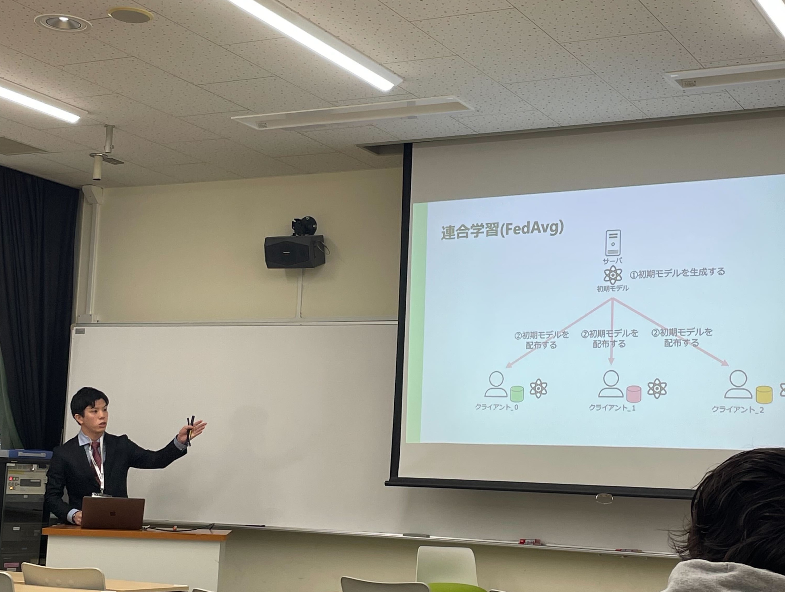
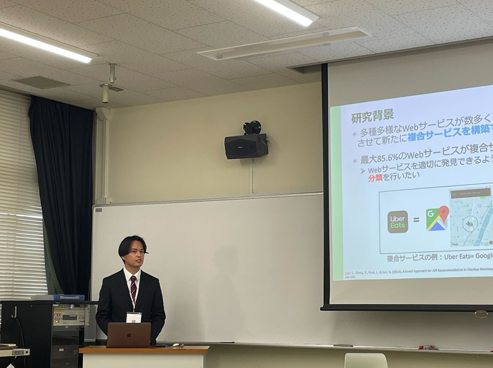
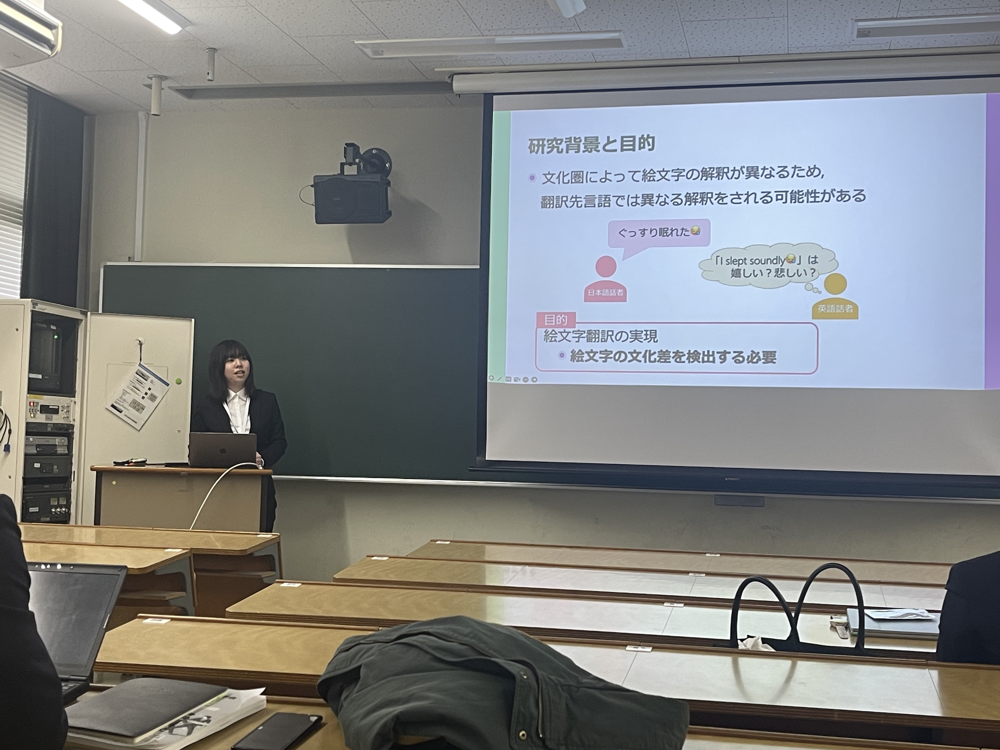
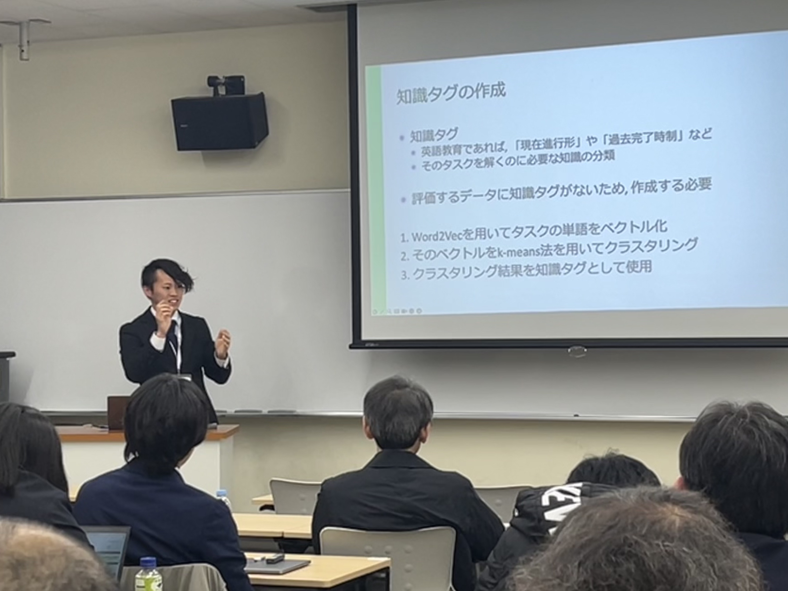

Date: March 4th - 8th, 2024 Location: Hirochima University, Higashi-Hiroshima Campus
Overview
Our laboratory's members, Mr. Kitagwa, Mr. Matsumoto, Ms. Mori and Mr. Yamamoto, gave a research presentation at The General Conference of The Institute of Electronics, Information and Communication Engineers of Japan.



